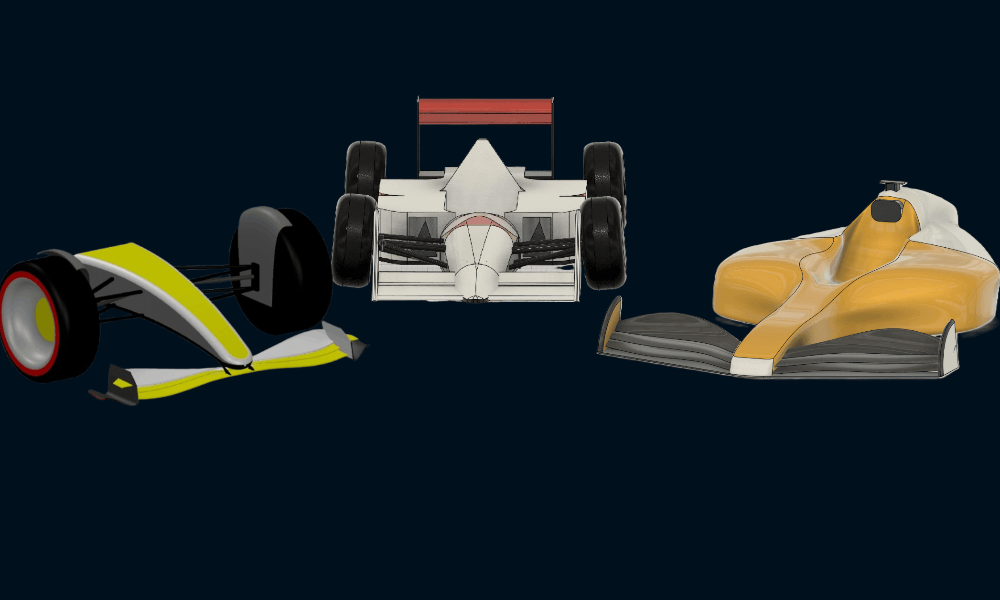

LOG_01 // AERODYNAMICS
F1 Aerodynamics Pipeline
Building my own OpenFOAM CFD wind tunnel on Linux to validate 90s, 2022 and 2026-regulation front wings through automated meshing and ParaView telemetry.
View Data Log →